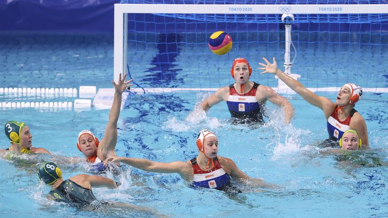

Waterpolo

Waterpolo is een watersport die wordt gespeeld met een bal in een zwembad.
Het is een sport die vooral in Zuid- en Oost-Europa grote populariteit geniet en daar op professionele basis wordt beoefend.
Waterpolo is een teambalsport die zwemmend wordt uitgeoefend.
De bedoeling is om een bal zo vaak mogelijk in het doel van de tegenpartij te werpen.
Elke geslaagde poging levert één 'doelpunt' op.
Het team dat aan het eind van de wedstrijd de meeste doelpunten heeft gemaakt, wint.